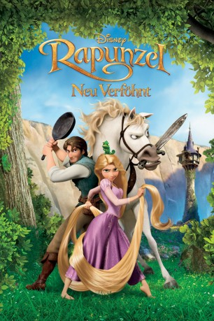

#1195 Rapunzel - Neu verföhnt
Alternativ: Tangled
Auszeichnungen: für 1 Oscars nominiert
 
 IMDB-Wertung: 7.8 / 10
IMDB-Wertung: 7.8 / 10  Metascore: 71
Metascore: 71 
Flynn Rider ist ein Dieb, wie er im Buche steht. Smart, charmant und seinen hartnäckigen Verfolgern immer einen klugen Schritt voraus.Groß ist seine Freude, als er auf der Flucht einen scheinbar verwaisten Turm im Wald entdeckt. Flugs klettert er an ihm hoch und geschwind hangelt er sich hinein. Noch größer ist allerdings seine Überraschung, als er dort auf das Mädchen Rapunzel mit dem langen, seidig glänzenden, blonden Haar trifft. Und nun beginnt das Abenteuer erst richtig, den Rapunzel will raus aus dem Turm...
Jahr: 2010
Dauer: 100 Minuten
FSK: 0
Land: USA Studio: Walt Disney Studios Motion PicturesTonspuren: DTS - ,
Untertitel:
Auflösung: 1080p (1920x1080) Größe: 5345 MB
Genre: Animation/Trick, Abenteuer, Komödie, Familie, Fantasy, Musical, Liebe
Regisseur: Nathan Greno, Byron Howard
Drehbuch: Dan Fogelman, Jacob Grimm, Wilhelm Grimm
Soundtrack: Alan Menken
Darsteller:
Datei: X:\Kinder Disney HD\Rapunzel\Rapunzel - Neu verföhnt (2010, FSKo.Al., 1920x1080).mkv seit 02.06.2015
Festplatte: Kinder-Filme+Trick
 Alle Filme aus Gruppe 'Kinder Disney HD\Rapunzel'
Alle Filme aus Gruppe 'Kinder Disney HD\Rapunzel'